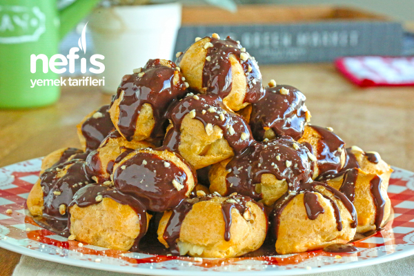
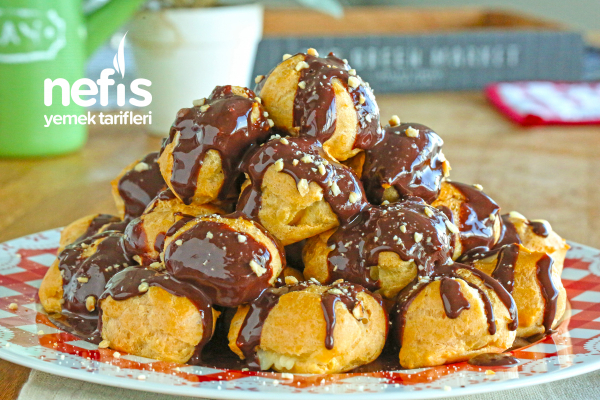

Profiterol
Kaç Kişilik:6-8 Hazırlama Süresi:15-20 Dakika Pişirme Süresi:40 Dakika

Tadına doyamayacağınız bir profiterol hazırladık.
Tarif: Nimetullah Can Çağlar
Kaç Kişilik:6-8 Hazırlama Süresi:15-20 Dakika Pişirme Süresi:40 Dakika
